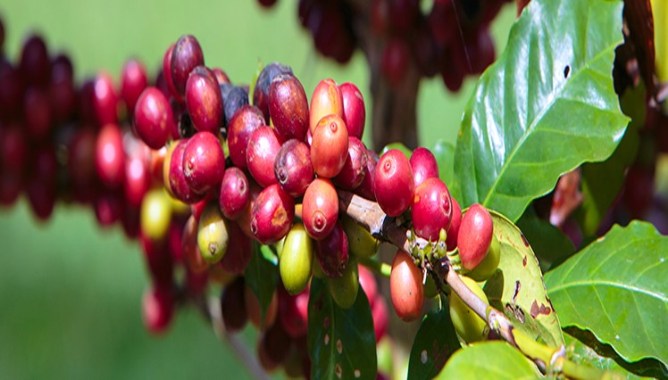
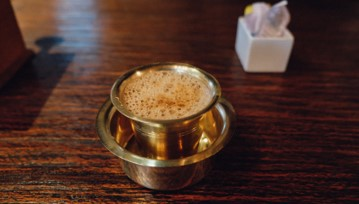

อินเดีย


มีกาแฟรสชาติเฉพาะตัว ชื่อมอนซูน มาลาบาร์ (Monsooned Malabar) Baba Budan ปลูกเมล็ดกาแฟเหล่านี้ในพื้นที่ที่ปัจจุบัน คือเขต Chikmagalur ในภูมิภาค Karnatakaและกาแฟก็เติบโตขึ้นอย่างอุดมสมบูรณ์ ปัจจุบันภูเขาบางลูกในพื้นที่นี้ก็ตังชื่อตามชื่อของเขาคือ Baba Budan Giri และยังคงเป็นพื้นที่ปลูกกาแฟที่สำคัญ